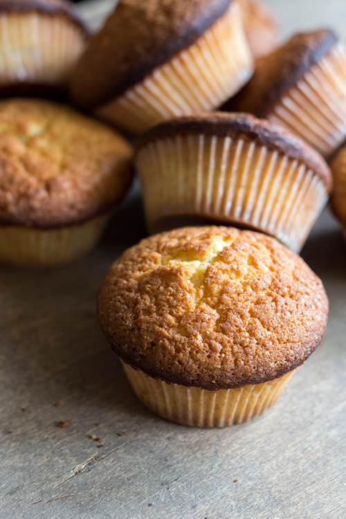

Muffinite põhiretsept
Originaal retsepti allikas
Lisainfo
Kokku 12tk
Valmistada ahjus küpsetades
Valmistuaeg 30minutit
Dessert

Koostisosad
Kogus
Muna
2tk
Suhkur
2dl
Nisujahu
4dl
Vanillisuhkurt
3tl
Piim
1dl
Pehme või
150g
Küpsetuspulbrit
1tl
Vahusta pehme või suhkruga, lisa ükshaaval vahustades munad.
Sega kuivained omavahel ja lisa tainale.
Sega taina hulka piim ja soovitud täidis.
Muffinitainast tuleb segada nii vähe kui võimalik!
Jaota tainas 12 võitatud muffinivormi sisse ja küpseta 200-kraadises ahjus umbes 20 minutit.